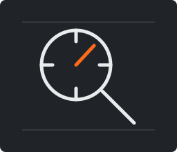
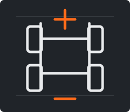
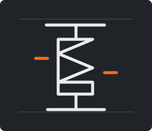
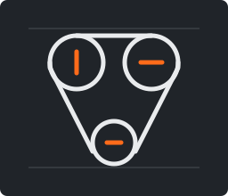

Weitere Leistungen
Zusatzleistungen rund um Ihr Auto
Neben dem regulären Service bieten wir eine ganze Reihe weiterer Dienstleistungen an. Dazu gehören die Anpassung und Kalibrierung ausgewählter Fahrassistenten an ein bestimmtes Fahrzeugmodell und die jeweilige Fahrzeugausstattung, die Einstellung und Kalibrierung von Scheinwerfern, die Fahrwerksdiagnose, die Fahrzeuggeometrie, die Reparatur von Bremsscheiben und andere.
-

ODIS-Diagnose
ODIS-Diagnose, Auswertung von Messwerten und fachgerechte Messungen entsprechend der Beanstandung.
-

Spezialdiagnose
Endoskopie, mikroskopische Flüssigkeitskontrolle, CO₂- und Druckmessung sowie Rauch- und UV-Diagnose je nach Fehlerbild.
-

Einstellung und Kalibrierung von Fahrerassistenzsystemen
Front Assist, Rear Assist, Lane Assist, Side Assist, Adaptive Cruise Control, Area View, Laser Scanner, Night Vision, Head-up-Display
-

Scheinwerfereinstellung
Einstellung und Kalibrierung von Scheinwerfern (u.a. LED, HD Matrix LED-Laser).
-

Fahrwerksdiagnose
Prüfung von Stoßdämpfern und Bremsanlage einschließlich elektrischer Parkbremse sowie Spielprüfung an beiden Achsen.
-

Achsvermessung
Für die Achsvermessung verwenden wir Originalausrüstung mit 3D-Technik.
-

Bremsscheibenbearbeitung
Wir bearbeiten Bremsscheiben durch Abdrehen direkt am Fahrzeug, ohne die Scheiben auszubauen.
-

Service der hinteren Trommelbremsen von Elektrofahrzeugen
Inspektion und Wartung der hinteren Trommelbremsen. Genaue Grundeinstellung mit dem Spezialwerkzeug der Reihe T10635 gemäß der Servicedokumentation des jeweiligen Fahrzeugs.
-

Austausch der Lager von Achsträger und Querlenkern
Fachgerechter Austausch von Achsträger- und Querlenkerlagern mit speziellen VAS-Werkzeugen. Bei ausgewählten Fahrzeugen ist dies ohne Ausbau der gesamten Achse möglich.
-

Zahnriemen- und Steuerkettenwechsel
Fachgerechter Austausch von Zahnriemen und Ketten gemäß den technologischen Verfahren des Herstellers.
-

DSG- und S tronic-Getriebe
Umfassende Diagnose, Wartung und mechanische Reparaturen von DSG- und S tronic-Automatikgetrieben.
-

Service für Hybrid- und Elektrofahrzeuge
Professionelle Wartung, regelmäßige Serviceinspektionen und Diagnose von Hybrid- und Elektrofahrzeugen des VW-Konzerns.
-

Motorentkokung
Chemische und mechanische Entkarbonisierung von Benzin- und Dieselmotoren, einschließlich der Entfernung von Kohlenstoffablagerungen an Einlassventilen.
-

Reparatur und Befüllung von Klimaanlagen
Wir ermitteln die Ursache unzureichender Kühlung und schlagen eine Reparatur vor; bloßes Nachfüllen von Kältemittel beseitigt keine Undichtigkeit.
-
Vorbereitung und Organisation der tschechischen Fahrzeugprüfung (STK)
Wir prüfen Ihr Fahrzeug und bereiten es auf die tschechische technische Fahrzeugprüfung (STK) vor oder übernehmen die gesamte Organisation für Sie.
-

Fahrzeugprüfung nach einem Unfall
Wir beurteilen sichtbare Schäden am Fahrzeug, prüfen zugängliche Sicherheits- und Technikkomponenten und empfehlen das weitere Vorgehen.